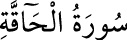

69- el-HÂKKA SÛRESİ
Mekke’de nâzil olan bu sûre, 52 âyettir. Adını, ilk âyetindeki «el-hâkka»
kelimesinden almıştır. «Hâkka»ya değişik mânâlar verilmiştir. «Hak» kökünden
geldiği için, hepsinde hak ve hakîkat mânâsı vardır. Daha çok «kıyâmet» mânâsı
verilmektedir.